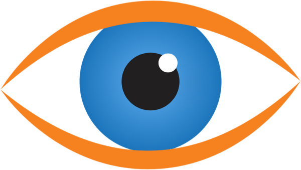

<!doctype html>
<html lang="es">
<head>
<meta charset="utf-8">
<meta name="viewport" content="width=device-width,initial-scale=1,viewport-fit=cover,user-scalable=no">
<title>Ojo Seco</title>
<meta name="apple-mobile-web-app-capable" content="yes">
<meta name="mobile-web-app-capable" content="yes">
<meta name="apple-mobile-web-app-title" content="Ojo Seco">
<meta name="apple-mobile-web-app-status-bar-style" content="default">
<meta name="theme-color" content="#f4f7fa">
<link rel="apple-touch-icon" href="icon-180.png">
<link rel="manifest" href="manifest.json">
<style>
:root{--blue:#1f74be;--blue2:#e8f1fa;--orange:#f5821f;--dark:#1d2b36;--gray:#5b6873;--line:#d5dde5;--bg:#f4f7fa;--ok:#2e9e5b;--warn:#d99a00;--bad:#c8372d}
*{box-sizing:border-box;-webkit-tap-highlight-color:transparent}
html,body{margin:0;background:var(--bg);color:var(--dark);font-family:-apple-system,"Helvetica Neue",Helvetica,Arial,sans-serif;touch-action:manipulation}
body{min-height:100vh;padding:env(safe-area-inset-top) 16px env(safe-area-inset-bottom)}
.wrap{max-width:820px;margin:0 auto;padding:28px 0 60px;position:relative}
.logo{display:block;height:70px;margin:0 auto 10px}
.logo.big{height:140px;margin:30px auto 20px}
h1{font-size:40px;margin:10px 0 8px;text-align:center}
h2{font-size:30px;margin:24px 0 12px}
.sub{color:var(--gray);font-size:22px;text-align:center;margin:0 0 26px;line-height:1.4}
.card{background:#fff;border-radius:20px;padding:26px;box-shadow:0 2px 10px rgba(0,0,0,.05);margin-bottom:18px}
button{font:inherit;cursor:pointer;border:none}
.btn{display:block;width:100%;padding:22px 24px;font-size:26px;font-weight:600;border-radius:18px;background:var(--blue);color:#fff;margin:14px 0}
.btn.sec{background:#fff;color:var(--blue);border:2px solid var(--blue)}
.btn.ora{background:var(--orange)}
.btn.small{font-size:20px;padding:14px 18px}
.btn:disabled{opacity:.4}
.btn .hint{display:block;font-size:17px;font-weight:400;opacity:.85;margin-top:4px}
.opt{display:flex;align-items:center;gap:16px;width:100%;text-align:left;padding:20px 24px;margin:12px 0;font-size:27px;background:#fff;border:2px solid var(--line);border-radius:18px;color:var(--dark);min-height:78px}
.opt .dot{flex:0 0 30px;height:30px;border-radius:50%;border:3px solid var(--line)}
.opt.sel{background:var(--blue);border-color:var(--blue);color:#fff}
.opt.sel .dot{border-color:#fff;background:#fff;box-shadow:inset 0 0 0 6px var(--blue)}
.opt.na{color:var(--gray);font-size:23px;min-height:64px}
.opt.na.sel{color:#fff}
.opt small{font-size:20px;opacity:.75;margin-left:auto}
.qhead{color:var(--gray);font-size:21px;margin:0 0 6px}
.qtext{font-size:34px;font-weight:700;line-height:1.3;margin:4px 0 22px}
.progress{height:10px;background:#e1e8ee;border-radius:6px;overflow:hidden;margin:6px 0 24px}
.progress i{display:block;height:100%;background:var(--orange);border-radius:6px;transition:width .3s}
.row{display:flex;gap:14px}
.row>*{flex:1}
label.f{display:block;font-size:22px;font-weight:600;margin:18px 0 8px}
input.f{width:100%;font-size:28px;padding:18px 20px;border:2px solid var(--line);border-radius:16px;background:#fff;color:var(--dark)}
input.f:focus{outline:none;border-color:var(--blue)}
.seg{display:flex;gap:14px}
.seg button{flex:1;padding:20px;font-size:25px;border-radius:16px;border:2px solid var(--line);background:#fff;color:var(--dark)}
.seg button.sel{background:var(--blue);border-color:var(--blue);color:#fff}
.err{color:var(--bad);font-size:21px;min-height:28px;margin-top:10px;text-align:center}
.corner{position:fixed;top:calc(env(safe-area-inset-top) + 10px);right:16px;width:46px;height:46px;border-radius:50%;background:transparent;color:#b5c0c9;font-size:26px}
.backlink{background:none;color:var(--blue);font-size:22px;padding:10px 0;margin-bottom:6px}
.pin{display:flex;justify-content:center;gap:18px;margin:20px 0 26px}
.pin i{width:22px;height:22px;border-radius:50%;border:3px solid var(--blue)}
.pin i.on{background:var(--blue)}
.pad{display:grid;grid-template-columns:repeat(3,96px);gap:16px;justify-content:center}
.pad button{height:96px;border-radius:50%;background:#fff;font-size:36px;color:var(--dark);box-shadow:0 2px 8px rgba(0,0,0,.07)}
.pad button.t{background:none;box-shadow:none;font-size:20px;color:var(--blue)}
.list .it{display:flex;justify-content:space-between;align-items:center;gap:12px;padding:18px 4px;border-bottom:1px solid #e6ecf1;font-size:22px;width:100%;background:none;text-align:left;color:var(--dark)}
.list .it:last-child{border-bottom:none}
.list .it b{display:block}
.list .it span{color:var(--gray);font-size:18px}
.pill{display:inline-block;padding:4px 12px;border-radius:20px;font-size:17px;font-weight:600;color:#fff;white-space:nowrap}
.report img{width:100%;border-radius:12px;box-shadow:0 2px 14px rgba(0,0,0,.12);background:#fff}
.note{font-size:18px;color:var(--gray);line-height:1.45}
.warnbox{background:#fff6e5;border:1px solid #f1d08a;border-radius:14px;padding:14px 18px;font-size:19px;margin-bottom:16px}
.search{margin-bottom:6px}
.del{background:none;color:var(--bad);font-size:18px;padding:8px}
@media (max-width:600px){.qtext{font-size:27px}.opt{font-size:22px}h1{font-size:32px}.pad{grid-template-columns:repeat(3,80px)}.pad button{height:80px}}
</style>
</head>
<body>
<div class="wrap" id="app"></div>
<script>
'use strict';
/* ================= Datos de los cuestionarios ================= */
const DEQ_FREQ = {
  es: ['Nunca', 'Rara vez', 'A veces', 'Frecuentemente', 'Siempre'],
  en: ['Never', 'Rarely', 'Sometimes', 'Frequently', 'Constantly']
};
const DEQ_INT = {
  es: ['No la tengo', 'Nada intensa', '2', '3', '4', 'Muy intensa'],
  en: ['Never have it', 'Not at all intense', '2', '3', '4', 'Very intense']
};
const DEQ5 = [
  { type: 'freq', short: 'Frecuencia de molestia',
    es: '¿Con qué frecuencia sintió molestia en los ojos?',
    en: 'How often did your eyes feel discomfort?' },
  { type: 'int', short: 'Intensidad de la molestia al final del día',
    es: 'Cuando sintió molestia, ¿qué tan intensa era al final del día, en las dos horas antes de acostarse?',
    en: 'When your eyes felt discomfort, how intense was this feeling at the end of the day, within two hours of going to bed?' },
  { type: 'freq', short: 'Frecuencia de ojos secos',
    es: '¿Con qué frecuencia sintió los ojos secos?',
    en: 'How often did your eyes feel dry?' },
  { type: 'int', short: 'Intensidad de la sequedad al final del día',
    es: 'Cuando sintió los ojos secos, ¿qué tan intensa era la sequedad al final del día, en las dos horas antes de acostarse?',
    en: 'When your eyes felt dry, how intense was this feeling of dryness at the end of the day, within two hours of going to bed?' },
  { type: 'freq', short: 'Ojos excesivamente llorosos',
    es: '¿Con qué frecuencia sintió o vio los ojos excesivamente llorosos?',
    en: 'How often did your eyes look or feel excessively watery?' }
];
const OSDI_OPTS = {
  es: ['Siempre', 'Casi siempre', 'La mitad del tiempo', 'A veces', 'Nunca'],
  en: ['All of the time', 'Most of the time', 'Half of the time', 'Some of the time', 'None of the time']
};
const OSDI_NA = { es: 'No aplica', en: 'Not applicable' };
const OSDI_SEC = {
  A: { es: '¿Ha tenido alguno de estos síntomas en la última semana?', en: 'Have you experienced any of the following during the last week?' },
  B: { es: '¿Sus ojos le han limitado para hacer alguna de estas actividades en la última semana?', en: 'Have problems with your eyes limited you in performing any of the following during the last week?' },
  C: { es: '¿Ha sentido molestias en los ojos en alguna de estas situaciones en la última semana?', en: 'Have your eyes felt uncomfortable in any of the following situations during the last week?' }
};
const OSDI = [
  { sec: 'A', es: 'Ojos sensibles a la luz', en: 'Eyes that are sensitive to light' },
  { sec: 'A', es: 'Sensación de arenilla en los ojos', en: 'Eyes that feel gritty' },
  { sec: 'A', es: 'Ojos adoloridos o irritados', en: 'Painful or sore eyes' },
  { sec: 'A', es: 'Visión borrosa', en: 'Blurred vision' },
  { sec: 'A', es: 'Mala visión', en: 'Poor vision' },
  { sec: 'B', es: 'Leer', en: 'Reading' },
  { sec: 'B', es: 'Manejar de noche', en: 'Driving at night' },
  { sec: 'B', es: 'Usar computadora o cajero automático', en: 'Working with a computer or bank machine (ATM)' },
  { sec: 'B', es: 'Ver televisión', en: 'Watching TV' },
  { sec: 'C', es: 'Con viento', en: 'Windy conditions' },
  { sec: 'C', es: 'En lugares muy secos', en: 'Places or areas with low humidity (very dry)' },
  { sec: 'C', es: 'En lugares con aire acondicionado', en: 'Areas that are air conditioned' }
];
const OSDI_SEC_ES = { A: 'Síntomas', B: 'Actividades limitadas', C: 'Situaciones' };

const T = {
  es: {
    welcome: 'Bienvenido', datos: 'Sus datos', nombre: 'Nombre completo', cedula: 'Cédula o pasaporte',
    edad: 'Edad', sexo: 'Sexo', fem: 'Femenino', masc: 'Masculino', cont: 'Continuar', back: '‹ Atrás',
    start: 'Empezar', fill: 'Por favor complete todos los datos.',
    deqIntro: 'Piense en un <b>día típico del último mes</b>.<br>Toque una sola respuesta en cada pregunta.',
    osdiIntro: 'Piense en la <b>última semana</b>.<br>Toque una respuesta en cada pregunta. Si no aplica a usted (por ejemplo, no maneja de noche), toque «No aplica».',
    more: 'Gracias. Ahora unas preguntas más.', thanks: '¡Muchas gracias!',
    thanks2: 'Terminó el cuestionario.<br>Por favor entregue el iPad al personal del consultorio.',
    q: 'Pregunta', of: 'de', title: 'Cuestionario sobre sus ojos'
  },
  en: {
    welcome: 'Welcome', datos: 'Your information', nombre: 'Full name', cedula: 'ID or passport number',
    edad: 'Age', sexo: 'Sex', fem: 'Female', masc: 'Male', cont: 'Continue', back: '‹ Back',
    start: 'Start', fill: 'Please complete all fields.',
    deqIntro: 'Think about a <b>typical day during the past month</b>.<br>Tap only one answer for each question.',
    osdiIntro: 'Think about <b>the last week</b>.<br>Tap one answer for each question. If a question does not apply to you (for example, you do not drive at night), tap “Not applicable”.',
    more: 'Thank you. Now a few more questions.', thanks: 'Thank you very much!',
    thanks2: 'You have finished the questionnaire.<br>Please hand the iPad back to the clinic staff.',
    q: 'Question', of: 'of', title: 'Questionnaire about your eyes'
  }
};

/* ================= Puntajes ================= */
const COL = { ok: '#2e9e5b', warn: '#d99a00', mod: '#e56b1f', bad: '#c8372d' };
const sum = a => a.reduce((s, v) => s + (typeof v === 'number' ? v : 0), 0);
function deqInterp(s) {
  if (s <= 5) return { t: 'Poco probable ojo seco', short: 'Poco probable', c: COL.ok };
  if (s <= 11) return { t: 'Sugiere ojo seco: aplicar OSDI y pruebas clínicas', short: 'Sugiere ojo seco', c: COL.warn };
  return { t: 'Ojo seco probable; considerar Sjögren', short: 'Probable', c: COL.bad };
}
function osdiCalc(a) {
  const ans = a.filter(v => typeof v === 'number');
  const s = sum(ans), n = ans.length;
  return { sum: s, n, score: n ? Math.round(s * 25 / n * 10) / 10 : 0 };
}
function osdiInterp(x) {
  if (x < 13) return { t: 'Normal', short: 'Normal', c: COL.ok };
  if (x < 23) return { t: 'Leve', short: 'Leve', c: COL.warn };
  if (x < 33) return { t: 'Moderado', short: 'Moderado', c: COL.mod };
  return { t: 'Severo', short: 'Severo', c: COL.bad };
}
const fmt1 = n => (Math.round(n * 10) / 10).toString().replace('.', ',');

/* ================= Almacenamiento (solo en este iPad) ================= */
const KEY = 'ojoseco.v1';
function emptyDB() { return { pin: null, patients: {}, visits: [], lastBackup: null }; }
function load() { try { return Object.assign(emptyDB(), JSON.parse(localStorage.getItem(KEY)) || {}); } catch (e) { return emptyDB(); } }
let DB = load();
function save() {
  try { localStorage.setItem(KEY, JSON.stringify(DB)); return true; }
  catch (e) { alert('No se pudo guardar en el iPad: ' + e.message); return false; }
}
try { navigator.storage && navigator.storage.persist && navigator.storage.persist(); } catch (e) {}
const normId = s => (s || '').toUpperCase().replace(/[^0-9A-Z]/g, '');
const esc = s => String(s == null ? '' : s).replace(/[&<>"']/g, c => ({ '&': '&amp;', '<': '&lt;', '>': '&gt;', '"': '&quot;', "'": '&#39;' }[c]));
const visitsOf = pid => DB.visits.filter(v => v.pid === pid).sort((a, b) => a.fecha.localeCompare(b.fecha));
function fDate(iso, long) {
  const d = new Date(iso);
  return d.toLocaleDateString('es-CR', long ? { weekday: 'long', day: 'numeric', month: 'long', year: 'numeric' } : { day: 'numeric', month: 'short', year: 'numeric' });
}
const fTime = iso => new Date(iso).toLocaleTimeString('es-CR', { hour: 'numeric', minute: '2-digit' });
const isoDay = iso => { const d = new Date(iso); return `${d.getFullYear()}-${String(d.getMonth() + 1).padStart(2, '0')}-${String(d.getDate()).padStart(2, '0')}`; };

/* ================= Estado y navegación ================= */
const app = document.getElementById('app');
let S = {};          // sesión del paciente
let busy = false;    // evita doble toque durante el avance automático
function newSession(mode) {
  S = { mode, lang: 'es', p: { nombre: '', cedula: '', edad: '', sexo: '' },
        deq: Array(5).fill(null), osdi: Array(12).fill(undefined),
        stage: mode === 'osdi' ? 'osdi' : 'deq', qi: 0 };
}
function show(html) { app.innerHTML = html; window.scrollTo(0, 0); }
let resume = null;  // pantalla del paciente a la que se vuelve si el personal cancela el PIN
const corner = () => `<button class="corner" onclick="askPin.cancel=resume;askPin(home)" aria-label="Personal">✕</button>`;

/* ---------- PIN del personal ---------- */
let pinBuf = '', pinFirst = null;
function askPin(next, setting) {
  pinBuf = '';
  const mode = setting || !DB.pin ? 'set' : 'check';
  const title = mode === 'set' ? (pinFirst ? 'Repita el PIN nuevo' : 'Cree un PIN de 4 números para el personal') : 'PIN del personal';
  show(`<h1 style="font-size:30px">${title}</h1>
    <div class="pin" id="dots">${'<i></i>'.repeat(4)}</div>
    <div class="pad">${[1,2,3,4,5,6,7,8,9].map(n => `<button onclick="pinKey('${n}')">${n}</button>`).join('')}
    <button class="t" onclick="pinCancel()">${mode === 'set' && !DB.pin ? '' : 'Cancelar'}</button>
    <button onclick="pinKey('0')">0</button><button class="t" onclick="pinKey('del')">Borrar</button></div>
    <div class="err" id="perr"></div>`);
  pinKey.next = next; pinKey.mode = mode; pinKey.prev = askPin.returnTo;
}
function pinCancel() { pinFirst = null; const c = askPin.cancel; askPin.cancel = null; (c || home)(); }
function pinKey(k) {
  if (k === 'del') pinBuf = pinBuf.slice(0, -1); else if (pinBuf.length < 4) pinBuf += k;
  document.querySelectorAll('#dots i').forEach((d, i) => d.classList.toggle('on', i < pinBuf.length));
  if (pinBuf.length < 4) return;
  const err = document.getElementById('perr');
  setTimeout(() => {
    if (pinKey.mode === 'check') {
      if (pinBuf === DB.pin) { askPin.cancel = null; pinKey.next(); }
      else { err.textContent = 'PIN incorrecto'; pinBuf = ''; document.querySelectorAll('#dots i').forEach(d => d.classList.remove('on')); }
    } else {
      if (!pinFirst) { pinFirst = pinBuf; askPin(pinKey.next, true); }
      else if (pinFirst === pinBuf) { DB.pin = pinBuf; pinFirst = null; save(); askPin.cancel = null; pinKey.next(); }
      else { pinFirst = null; askPin(pinKey.next, true); document.getElementById('perr').textContent = 'No coincidían. Inténtelo de nuevo.'; }
    }
  }, 150);
}

/* ---------- Inicio (personal) ---------- */
function home() {
  if (!DB.pin) { askPin(home, true); return; }
  const n = DB.visits.length;
  const days = DB.lastBackup ? Math.floor((Date.now() - new Date(DB.lastBackup)) / 864e5) : null;
  const warn = n && (days === null || days > 30)
    ? `<div class="warnbox">💾 ${days === null ? 'Aún no hay respaldo.' : `Último respaldo hace ${days} días.`} Los cuestionarios viven solo en este iPad; haga un respaldo en <b>Respaldo</b>.</div>` : '';
  show(`<h1>Ojo seco</h1>
    <p class="sub">Escoja el cuestionario y entregue el iPad al paciente.</p>${warn}
    <button class="btn ora" onclick="startPatient('auto')">DEQ-5 y, si da 6 o más, OSDI<span class="hint">Protocolo del consultorio</span></button>
    <div class="row"><button class="btn" onclick="startPatient('deq')">Solo DEQ-5<span class="hint">Último mes · 5 preguntas</span></button>
    <button class="btn" onclick="startPatient('osdi')">Solo OSDI<span class="hint">Última semana · 12 preguntas</span></button></div>
    <div class="row"><button class="btn sec" onclick="patients()">Pacientes y reportes<span class="hint">${n} cuestionario${n === 1 ? '' : 's'} guardado${n === 1 ? '' : 's'}</span></button>
    <button class="btn sec" onclick="backup()">Respaldo<span class="hint">Guardar o recuperar datos</span></button></div>
    <button class="btn sec small" onclick="askPin.cancel=home;askPin(home,true)">Cambiar PIN</button>`);
}
function startPatient(mode) { newSession(mode); langScreen(); }

/* ---------- Pantallas del paciente ---------- */
function langScreen() {
  resume = langScreen;
  show(`${corner()}<h1>Bienvenido · Welcome</h1>
    <p class="sub">Toque su idioma · Tap your language</p>
    <button class="btn" onclick="S.lang='es';datos()">Español</button>
    <button class="btn" onclick="S.lang='en';datos()">English</button>`);
}
function datos(errMsg) {
  resume = () => datos();
  const t = T[S.lang], p = S.p;
  show(`${corner()}<button class="backlink" onclick="langScreen()">${t.back}</button>
    <h1>${t.datos}</h1>
    <div class="card">
      <label class="f" for="fn">${t.nombre}</label><input class="f" id="fn" autocomplete="off" autocapitalize="words" value="${esc(p.nombre)}">
      <label class="f" for="fc">${t.cedula}</label><input class="f" id="fc" autocomplete="off" autocapitalize="characters" value="${esc(p.cedula)}">
      <div class="row"><div><label class="f" for="fe">${t.edad}</label><input class="f" id="fe" inputmode="numeric" pattern="[0-9]*" maxlength="3" value="${esc(p.edad)}"></div><div></div></div>
      <label class="f">${t.sexo}</label>
      <div class="seg"><button id="sf" class="${p.sexo === 'F' ? 'sel' : ''}" onclick="setSex('F')">${t.fem}</button><button id="sm" class="${p.sexo === 'M' ? 'sel' : ''}" onclick="setSex('M')">${t.masc}</button></div>
      <div class="err" id="derr">${errMsg || ''}</div>
    </div>
    <button class="btn" onclick="datosOk()">${t.cont}</button>`);
}
function readDatos() {
  S.p.nombre = document.getElementById('fn').value.trim().replace(/\s+/g, ' ');
  S.p.cedula = document.getElementById('fc').value.trim();
  S.p.edad = document.getElementById('fe').value.replace(/\D/g, '');
}
function setSex(x) { readDatos(); S.p.sexo = x; document.getElementById('sf').classList.toggle('sel', x === 'F'); document.getElementById('sm').classList.toggle('sel', x === 'M'); }
function datosOk() {
  readDatos(); const p = S.p;
  if (!p.nombre || !normId(p.cedula) || !p.edad || !p.sexo) { document.getElementById('derr').textContent = T[S.lang].fill; return; }
  document.activeElement && document.activeElement.blur();
  intro();
}
function intro() {
  resume = intro;
  const t = T[S.lang], deq = S.stage === 'deq';
  const extra = !deq && S.mode === 'auto' ? `<p class="sub" style="font-size:26px;color:var(--dark)"><b>${t.more}</b></p>` : '';
  show(`${corner()}<button class="backlink" onclick="introBack()">${t.back}</button>
    <h1>${t.title}</h1>${extra}
    <div class="card" style="font-size:27px;line-height:1.5;text-align:center">${deq ? t.deqIntro : t.osdiIntro}</div>
    <button class="btn ora" onclick="S.qi=0;question()">${t.start}</button>`);
}
function introBack() {
  if (S.stage === 'osdi' && S.mode === 'auto') { S.stage = 'deq'; S.qi = 4; question(); } else datos();
}
function question() {
  resume = question;
  const t = T[S.lang], L = S.lang, deq = S.stage === 'deq';
  const items = deq ? DEQ5 : OSDI, it = items[S.qi], cur = deq ? S.deq[S.qi] : S.osdi[S.qi];
  const total = S.mode === 'auto' ? (deq ? 5 : 12) : items.length;
  let opts = '';
  if (deq) {
    const labels = it.type === 'freq' ? DEQ_FREQ[L] : DEQ_INT[L];
    opts = labels.map((lab, v) => {
      const txt = it.type === 'int' && v >= 1 ? `<b>${v}</b>${v === 1 || v === 5 ? ' — ' + lab : ''}` : lab;
      return `<button class="opt ${cur === v ? 'sel' : ''}" onclick="answer(${v},this)"><span class="dot"></span><span>${txt}</span></button>`;
    }).join('');
  } else {
    opts = OSDI_OPTS[L].map((lab, i) => { const v = 4 - i;
      return `<button class="opt ${cur === v ? 'sel' : ''}" onclick="answer(${v},this)"><span class="dot"></span><span>${lab}</span></button>`; }).join('');
    if (it.sec !== 'A') opts += `<button class="opt na ${cur === 'na' ? 'sel' : ''}" onclick="answer('na',this)"><span class="dot"></span><span>${OSDI_NA[L]}</span></button>`;
  }
  const n = S.qi + 1;
  show(`${corner()}<button class="backlink" onclick="qBack()">${t.back}</button>
    <div class="progress"><i style="width:${n / total * 100}%"></i></div>
    <p class="qhead">${t.q} ${n} ${t.of} ${total}</p>
    ${deq ? `<div class="qtext">${esc(it[L])}</div>` : `<p class="qhead" style="font-size:24px;color:var(--dark)">${esc(OSDI_SEC[it.sec][L])}</p><div class="qtext">${esc(it[L])}</div>`}
    ${opts}`);
  busy = false;
}
function qBack() { if (busy) return; if (S.qi > 0) { S.qi--; question(); } else intro(); }
function answer(v, el) {
  if (busy) return; busy = true;
  if (S.stage === 'deq') S.deq[S.qi] = v; else S.osdi[S.qi] = v;
  document.querySelectorAll('.opt').forEach(b => b.classList.remove('sel'));
  el.classList.add('sel');
  setTimeout(next, 320);
}
function next() {
  const items = S.stage === 'deq' ? DEQ5 : OSDI;
  if (S.qi < items.length - 1) { S.qi++; question(); return; }
  if (S.stage === 'deq' && S.mode === 'auto' && sum(S.deq) >= 6) { S.stage = 'osdi'; S.qi = 0; intro(); return; }
  finish();
}
function finish() {
  const p = S.p, pid = normId(p.cedula), now = new Date().toISOString();
  DB.patients[pid] = { nombre: p.nombre, cedula: p.cedula, edad: p.edad, sexo: p.sexo };
  const v = { id: Date.now().toString(36) + Math.random().toString(36).slice(2, 6), pid, fecha: now, lang: S.lang,
    nombre: p.nombre, edad: p.edad, sexo: p.sexo, mode: S.mode };
  const deqDone = S.mode !== 'osdi', osdiDone = S.mode === 'osdi' || (S.mode === 'auto' && sum(S.deq) >= 6);
  if (deqDone) v.deq5 = { a: S.deq.slice(), score: sum(S.deq) };
  if (osdiDone) v.osdi = Object.assign({ a: S.osdi.map(x => x === undefined ? 'na' : x) }, osdiCalc(S.osdi));
  DB.visits.push(v); save();
  S.visitId = v.id;
  thanks();
}
function thanks() {
  const t = T[S.lang];
  show(`<h1 style="font-size:46px;margin-top:40px">${t.thanks}</h1>
    <p class="sub" style="font-size:28px;color:var(--dark)">${t.thanks2}</p>
    <div style="height:30vh"></div>
    <button class="btn sec small" style="width:auto;margin:0 auto;padding:12px 30px" onclick="askPin.cancel=thanks;askPin(()=>reportScreen(S.visitId))">Personal</button>`);
}

/* ---------- Reporte (solo personal) ---------- */
let curBlob = null, curName = '';
async function reportScreen(id, backTo) {
  const v = DB.visits.find(x => x.id === id); if (!v) { home(); return; }
  show(`<button class="backlink" onclick="${backTo ? `patient('${v.pid}')` : 'home()'}">‹ ${backTo ? 'Paciente' : 'Inicio'}</button>
    <h1 style="font-size:32px">${esc(v.nombre)}</h1><p class="sub">${fDate(v.fecha, true)} · ${fTime(v.fecha)}</p>
    <button class="btn ora" id="sh" disabled onclick="shareReport()">Enviar imagen al iPad (AirDrop)</button>
    ${backTo ? '' : '<button class="btn" onclick="home()">Listo · siguiente paciente</button>'}
    <div class="report" id="rep"><p class="sub">Preparando reporte…</p></div>`);
  curBlob = null;
  const canvas = await drawReport(v);
  curBlob = await new Promise(r => canvas.toBlob(r, 'image/png'));
  curName = `Ojo seco - ${v.nombre.replace(/[\/\\:*?"<>|]/g, '')} - ${isoDay(v.fecha)}.png`;
  const rep = document.getElementById('rep'); if (!rep) return;
  rep.innerHTML = ``;
  document.getElementById('sh').disabled = false;
}
async function shareFile(blob, name, type) {
  const file = new File([blob], name, { type });
  if (navigator.canShare && navigator.canShare({ files: [file] })) {
    try { await navigator.share({ files: [file] }); return true; } catch (e) { if (e.name === 'AbortError') return false; }
  }
  const a = document.createElement('a'); a.href = URL.createObjectURL(blob); a.download = name; document.body.appendChild(a); a.click(); a.remove();
  return true;
}
function shareReport() { if (curBlob) shareFile(curBlob, curName, 'image/png'); }

/* ---------- Pacientes ---------- */
function patients(q) {
  q = q || '';
  const nq = q.toLowerCase().normalize('NFD').replace(/[̀-ͯ]/g, '');
  const rows = Object.entries(DB.patients).map(([pid, p]) => ({ pid, p, vs: visitsOf(pid) }))
    .filter(r => r.vs.length && (!nq || (r.p.nombre + ' ' + r.p.cedula).toLowerCase().normalize('NFD').replace(/[̀-ͯ]/g, '').includes(nq)))
    .sort((a, b) => b.vs[b.vs.length - 1].fecha.localeCompare(a.vs[a.vs.length - 1].fecha));
  show(`<button class="backlink" onclick="home()">‹ Inicio</button><h1>Pacientes</h1>
    <input class="f search" id="q" placeholder="Buscar por nombre o cédula" value="${esc(q)}" oninput="patientsFilter(this.value)">
    <div class="card list" id="plist">${rows.length ? rows.map(r => { const last = r.vs[r.vs.length - 1];
      return `<button class="it" onclick="patient('${r.pid}')"><div><b>${esc(r.p.nombre)}</b><span>${esc(r.p.cedula)} · ${r.vs.length} cuestionario${r.vs.length > 1 ? 's' : ''} · último ${fDate(last.fecha)}</span></div><div>${scorePills(last)}</div></button>`; }).join('')
      : '<p class="sub">No hay cuestionarios guardados.</p>'}</div>`);
}
function patientsFilter(q) { patients(q); const i = document.getElementById('q'); i.focus(); i.setSelectionRange(q.length, q.length); }
function scorePills(v) {
  let h = '';
  if (v.deq5) { const i = deqInterp(v.deq5.score); h += `<span class="pill" style="background:${i.c}">DEQ-5 ${v.deq5.score}</span> `; }
  if (v.osdi) { const i = osdiInterp(v.osdi.score); h += `<span class="pill" style="background:${i.c}">OSDI ${fmt1(v.osdi.score)}</span>`; }
  return h;
}
function patient(pid) {
  const p = DB.patients[pid], vs = visitsOf(pid).reverse();
  if (!p || !vs.length) { patients(); return; }
  show(`<button class="backlink" onclick="patients()">‹ Pacientes</button><h1 style="font-size:34px">${esc(p.nombre)}</h1>
    <p class="sub">${esc(p.cedula)} · ${esc(p.edad)} años · ${p.sexo === 'F' ? 'Femenino' : 'Masculino'}</p>
    <div class="card list">${vs.map(v => `<div class="it"><button style="flex:1;background:none;text-align:left;font-size:22px;color:var(--dark)" onclick="reportScreen('${v.id}',1)"><b>${fDate(v.fecha, true)}</b><span>${fTime(v.fecha)} · tocar para ver el reporte</span></button><div>${scorePills(v)}</div><button class="del" onclick="delVisit('${v.id}')">Borrar</button></div>`).join('')}</div>
    <p class="note">El reporte de cada fecha incluye la comparación con los cuestionarios anteriores de este paciente.</p>`);
}
function delVisit(id) {
  const v = DB.visits.find(x => x.id === id); if (!v) return;
  if (!confirm(`¿Borrar el cuestionario de ${v.nombre} del ${fDate(v.fecha)}? No se puede deshacer.`)) return;
  DB.visits = DB.visits.filter(x => x.id !== id);
  if (!DB.visits.some(x => x.pid === v.pid)) delete DB.patients[v.pid];
  save(); patient(v.pid);
}

/* ---------- Respaldo ---------- */
function backup(msg) {
  show(`<button class="backlink" onclick="home()">‹ Inicio</button><h1>Respaldo</h1>
    <p class="sub">Los cuestionarios se guardan solo en este iPad. Guarde un respaldo de vez en cuando (por ejemplo, en Archivos → iCloud Drive o por AirDrop a la Mac).</p>
    <button class="btn" onclick="exportDB()">Guardar respaldo</button>
    <label class="btn sec" style="text-align:center">Recuperar desde un respaldo<input type="file" accept=".json,application/json" style="display:none" onchange="importDB(this.files[0])"></label>
    <p class="err" style="color:var(--ok)">${msg || ''}</p>
    <p class="note">Recuperar <b>suma</b> los datos del respaldo a los que ya hay; no borra nada.<br>Último respaldo: ${DB.lastBackup ? fDate(DB.lastBackup, true) : 'nunca'}.</p>`);
}
async function exportDB() {
  const data = JSON.stringify({ app: 'ojoseco', version: 1, exported: new Date().toISOString(), patients: DB.patients, visits: DB.visits }, null, 1);
  const ok = await shareFile(new Blob([data], { type: 'application/json' }), `Respaldo ojo seco ${isoDay(new Date())}.json`, 'application/json');
  if (ok) { DB.lastBackup = new Date().toISOString(); save(); backup('Respaldo listo.'); }
}
function importDB(file) {
  if (!file) return;
  const r = new FileReader();
  r.onload = () => {
    try {
      const d = JSON.parse(r.result);
      if (d.app !== 'ojoseco' || !Array.isArray(d.visits)) throw new Error('no es un respaldo de esta app');
      const have = new Set(DB.visits.map(v => v.id)); let n = 0;
      d.visits.forEach(v => { if (v && v.id && !have.has(v.id)) { DB.visits.push(v); n++; } });
      Object.entries(d.patients || {}).forEach(([k, p]) => { if (!DB.patients[k]) DB.patients[k] = p; });
      save(); backup(`Se agregaron ${n} cuestionario${n === 1 ? '' : 's'}.`);
    } catch (e) { backup(''); document.querySelector('.err').style.color = 'var(--bad)'; document.querySelector('.err').textContent = 'No se pudo leer: ' + e.message; }
  };
  r.readAsText(file);
}

/* ================= Dibujo del reporte (PNG) ================= */
const loadImg = src => new Promise((res, rej) => { const i = new Image(); i.onload = () => res(i); i.onerror = rej; i.src = src; });
async function drawReport(v) {
  const W = 1700, M = 100, CW = W - 2 * M, BLUE = '#1f74be', ORANGE = '#f5821f', DARK = '#1d2b36', GRAY = '#5b6873', LIGHT = '#f1f5f8';
  const c = document.createElement('canvas'); c.width = W; c.height = 9000;
  const x = c.getContext('2d');
  const F = (s, b) => `${b ? '700 ' : ''}${s}px "Helvetica Neue", Helvetica, Arial, sans-serif`;
  x.fillStyle = '#fff'; x.fillRect(0, 0, W, c.height); x.textBaseline = 'alphabetic';
  const text = (t, X, Y, font, color, align) => { x.font = font; x.fillStyle = color || DARK; x.textAlign = align || 'left'; x.fillText(t, X, Y); x.textAlign = 'left'; };
  const wrap = (t, maxW, font) => { x.font = font; const out = []; let line = '';
    String(t).split(' ').forEach(w => { const tr = line ? line + ' ' + w : w; if (x.measureText(tr).width > maxW && line) { out.push(line); line = w; } else line = tr; });
    if (line) out.push(line); return out; };
  const rrect = (X, Y, w, h, r, fill) => { x.beginPath(); x.roundRect(X, Y, w, h, r); x.fillStyle = fill; x.fill(); };
  const pill = (t, X, Y, color, size) => { x.font = F(size || 30, 1); const w = x.measureText(t).width + 40, h = (size || 30) + 26; rrect(X, Y - h + 12, w, h, h / 2, color); text(t, X + 20, Y - 2, F(size || 30, 1), '#fff'); return w; };

  let y = 70;
  try { const logo = await loadImg('logo.png'); const lh = 130, lw = logo.width * lh / logo.height; x.drawImage(logo, M, y, lw, lh);
    text('Center Dr Eyes', M + lw + 30, y + 62, F(52, 1), BLUE); text('Dr. Tito Venegas · Oftalmólogo · Alajuela', M + lw + 30, y + 108, F(30), GRAY); } catch (e) {}
  text(fDate(v.fecha, true), W - M, y + 62, F(30), GRAY, 'right');
  text(fTime(v.fecha), W - M, y + 106, F(30), GRAY, 'right');
  y += 165; x.fillStyle = ORANGE; x.fillRect(M, y, CW, 6); y += 80;
  text('Reporte de cuestionario de ojo seco', M, y, F(54, 1)); y += 36;

  // Datos del paciente
  rrect(M, y, CW, 170, 20, LIGHT);
  const col2 = M + CW * 0.62;
  text('Nombre', M + 30, y + 50, F(24), GRAY); text(v.nombre, M + 30, y + 92, F(38, 1));
  text('Cédula / pasaporte', col2, y + 50, F(24), GRAY); text(DB.patients[v.pid] ? DB.patients[v.pid].cedula : v.pid, col2, y + 92, F(34, 1));
  text(`Edad: ${v.edad} años     Sexo: ${v.sexo === 'F' ? 'Femenino' : 'Masculino'}     Respondió en: ${v.lang === 'en' ? 'inglés' : 'español'}`, M + 30, y + 145, F(28), DARK);
  y += 230;

  // Resultado principal: ¿síntomas compatibles?
  const meets = (v.deq5 && v.deq5.score >= 6) || (v.osdi && v.osdi.score >= 13);
  rrect(M, y, CW, 200, 22, meets ? '#e56b1f' : COL.ok);
  text('Síntomas compatibles con ojo seco:', M + 40, y + 92, F(46, 1), '#fff');
  text(meets ? 'SÍ' : 'NO', W - M - 50, y + 104, F(92, 1), '#fff', 'right');
  text(meets ? 'Cumple el criterio de síntomas de TFOS DEWS II (DEQ-5 ≥ 6 u OSDI ≥ 13). Confirmar con al menos un signo clínico.'
             : 'No cumple el criterio de síntomas de TFOS DEWS II (DEQ-5 ≥ 6 u OSDI ≥ 13).', M + 40, y + 154, F(26), '#fff');
  y += 250;

  // Resumen
  const cards = [];
  if (v.deq5) { const i = deqInterp(v.deq5.score); cards.push({ n: 'DEQ-5', sub: 'Último mes · rango 0–22', s: String(v.deq5.score), i }); }
  if (v.osdi) { const i = osdiInterp(v.osdi.score); cards.push({ n: 'OSDI', sub: `Última semana · ${v.osdi.n} de 12 respondidas`, s: fmt1(v.osdi.score), i }); }
  const gap = 30, cw = cards.length > 1 ? (CW - gap) / 2 : CW;
  cards.forEach((k, idx) => {
    const X = M + idx * (cw + gap);
    rrect(X, y, cw, 250, 22, k.i.c); rrect(X + 6, y + 6, cw - 12, 238, 18, '#fff');
    text(k.n, X + 36, y + 66, F(40, 1)); text(k.sub, X + 36, y + 106, F(24), GRAY);
    text(k.s, X + 36, y + 210, F(96, 1), k.i.c);
    x.font = F(96, 1); const sw = x.measureText(k.s).width;
    const lines = wrap(k.i.t, cw - sw - 110, F(30, 1));
    lines.forEach((l, j) => text(l, X + 36 + sw + 34, y + 190 - (lines.length - 1) * 38 + j * 38 + 8, F(30, 1), k.i.c));
  });
  y += 300;
  if (v.mode === 'auto' && !v.osdi) { text('OSDI no aplicado: el DEQ-5 dio menos de 6.', M, y, F(28), GRAY); y += 50; }

  // Pruebas clínicas: casillas en blanco para anotar en GoodNotes
  const box = (X, Y, w, h) => { x.strokeStyle = '#9fb0bf'; x.lineWidth = 2; x.beginPath(); x.roundRect(X, Y, w, h, 10); x.fillStyle = '#fff'; x.fill(); x.stroke(); };
  y += 50;
  text('Pruebas clínicas — completar en consulta', M, y, F(36, 1), BLUE); y += 26;
  const sc = [0.40, 0.26, 0.17, 0.17].map(f => f * CW);
  rrect(M, y, CW, 60, 10, '#e3ecf4');
  ['Prueba', 'Positivo si', 'OD', 'OI'].forEach((t, i) => text(t, M + 20 + sc.slice(0, i).reduce((a, b) => a + b, 0), y + 40, F(24, 1), GRAY));
  y += 60;
  [['NIBUT (s)', '< 10 s'], ['Osmolaridad (mOsm/L)', '≥ 308 o diferencia > 8'], ['Tinción corneal (fluoresceína)', '> 5 puntos'],
   ['Tinción conjuntival (verde lisamina)', '> 9 puntos'], ['Tinción del borde palpebral', '≥ 2 mm largo y ≥ 25 % ancho']].forEach(([t, cut], j) => {
    const h = 96;
    if (j % 2) { x.fillStyle = '#f7f9fb'; x.fillRect(M, y, CW, h); }
    text(t, M + 20, y + 58, F(27)); text(cut, M + 20 + sc[0], y + 58, F(25), GRAY);
    box(M + sc[0] + sc[1] + 10, y + 14, sc[2] - 30, h - 28); box(M + sc[0] + sc[1] + sc[2] + 10, y + 14, sc[3] - 30, h - 28);
    x.fillStyle = '#e3e9ee'; x.fillRect(M, y + h - 1, CW, 1); y += h;
  });
  y += 60;
  text('Diagnóstico', M, y, F(32, 1), DARK); y += 24;
  ['Ojo seco (síntomas + al menos un signo positivo)', 'Síntomas sin signos: buscar otra causa (alergia, blefaritis, dolor neuropático…)', 'No cumple la definición de ojo seco']
    .forEach(t => { x.strokeStyle = DARK; x.lineWidth = 3; x.strokeRect(M + 10, y + 16, 38, 38); text(t, M + 74, y + 47, F(28)); y += 66; });
  y += 80;

  // Tablas de respuestas
  const table = (title, rows) => {
    text(title, M, y, F(36, 1), BLUE); y += 26;
    const c0 = CW * 0.60, c1 = CW * 0.28;
    rrect(M, y, CW, 60, 10, '#e3ecf4');
    text('Pregunta', M + 20, y + 40, F(24, 1), GRAY); text('Respuesta', M + c0 + 20, y + 40, F(24, 1), GRAY); text('Puntos', W - M - 20, y + 40, F(24, 1), GRAY, 'right');
    y += 60;
    rows.forEach((r, j) => {
      if (r.section) { text(r.section, M + 20, y + 44, F(24, 1), ORANGE); y += 60; return; }
      const l0 = wrap(r.q, c0 - 40, F(27)), l1 = wrap(r.a, c1 - 30, F(27, r.strong));
      const h = Math.max(l0.length, l1.length) * 36 + 30;
      if (j % 2) { x.fillStyle = '#f7f9fb'; x.fillRect(M, y, CW, h); }
      l0.forEach((l, k) => text(l, M + 20, y + 42 + k * 36, F(27)));
      l1.forEach((l, k) => text(l, M + c0 + 20, y + 42 + k * 36, F(27, r.strong), r.na ? GRAY : DARK));
      text(r.p, W - M - 20, y + 42, F(28, 1), r.na ? GRAY : DARK, 'right');
      x.fillStyle = '#e3e9ee'; x.fillRect(M, y + h - 1, CW, 1); y += h;
    });
    y += 20;
  };
  if (v.deq5) {
    table('DEQ-5 — respuestas', DEQ5.map((it, i) => { const a = v.deq5.a[i];
      const lab = it.type === 'freq' ? DEQ_FREQ.es[a] : (a === 0 ? 'No la tengo' : a === 1 ? 'Nada intensa (1)' : a === 5 ? 'Muy intensa (5)' : `Intensidad ${a}`);
      return { q: `${i + 1}. ${it.es}`, a: lab, p: String(a), strong: a >= 3 }; }));
    text(`Total DEQ-5: ${v.deq5.score} / 22`, W - M - 20, y, F(30, 1), DARK, 'right'); y += 80;
  }
  if (v.osdi) {
    const rows = []; let last = '';
    OSDI.forEach((it, i) => { if (it.sec !== last) { rows.push({ section: `${it.sec}. ${OSDI_SEC_ES[it.sec]}` }); last = it.sec; }
      const a = v.osdi.a[i], na = a === 'na';
      rows.push({ q: `${i + 1}. ${it.es}`, a: na ? 'No aplica' : OSDI_OPTS.es[4 - a], p: na ? '—' : String(a), na, strong: !na && a >= 3 }); });
    table('OSDI — respuestas', rows);
    text(`Suma ${v.osdi.sum} · respondidas ${v.osdi.n} · OSDI = ${v.osdi.sum} × 25 ÷ ${v.osdi.n} = ${fmt1(v.osdi.score)}`, W - M - 20, y, F(28, 1), DARK, 'right'); y += 80;
  }

  // Evolución
  const hist = visitsOf(v.pid).filter(h => h.fecha <= v.fecha);
  const prev = hist.filter(h => h.id !== v.id);
  if (prev.length) {
    x.fillStyle = ORANGE; x.fillRect(M, y - 20, CW, 4); y += 50;
    text('Evolución del paciente', M, y, F(40, 1), BLUE); y += 30;
    const showDeq = hist.some(h => h.deq5), showOsdi = hist.some(h => h.osdi);
    // tabla
    const cols = [{ t: 'Fecha', w: 0.34 }]; if (showDeq) cols.push({ t: 'DEQ-5', w: showOsdi ? 0.30 : 0.66 }); if (showOsdi) cols.push({ t: 'OSDI', w: showDeq ? 0.36 : 0.66 });
    rrect(M, y, CW, 56, 10, '#e3ecf4'); let cx = M + 20;
    cols.forEach(cc => { text(cc.t, cx, y + 38, F(24, 1), GRAY); cx += cc.w * CW; }); y += 56;
    const first = { deq: hist.find(h => h.deq5), osdi: hist.find(h => h.osdi) };
    const delta = (a, b, f) => { const d = a - b; return d === 0 ? '' : ` (${d > 0 ? '+' : '−'}${f(Math.abs(d))})`; };
    hist.forEach((h, j) => {
      const cur = h.id === v.id;
      if (cur) { x.fillStyle = '#fff3e8'; x.fillRect(M, y, CW, 56); }
      cx = M + 20; text(fDate(h.fecha) + (cur ? '  (hoy)' : ''), cx, y + 38, F(26, cur), DARK); cx += cols[0].w * CW;
      if (showDeq) { const t = h.deq5 ? `${h.deq5.score} · ${deqInterp(h.deq5.score).short}` + (h !== first.deq && first.deq ? delta(h.deq5.score, first.deq.deq5.score, String) : '') : '—';
        text(t, cx, y + 38, F(26, cur), h.deq5 ? deqInterp(h.deq5.score).c : GRAY); cx += cols[1].w * CW; }
      if (showOsdi) { const t = h.osdi ? `${fmt1(h.osdi.score)} · ${osdiInterp(h.osdi.score).short}` + (h !== first.osdi && first.osdi ? delta(h.osdi.score, first.osdi.osdi.score, fmt1) : '') : '—';
        text(t, cx, y + 38, F(26, cur), h.osdi ? osdiInterp(h.osdi.score).c : GRAY); }
      x.fillStyle = '#e3e9ee'; x.fillRect(M, y + 55, CW, 1); y += 56;
    });
    text('Entre paréntesis: cambio respecto al primer cuestionario.', M, y + 40, F(22), GRAY); y += 80;
    // gráficos
    const chart = (name, pts, max, cuts) => {
      if (pts.length < 2) return;
      const H = 330, X0 = M + 70, X1 = W - M - 190, Y0 = y + 50, Y1 = y + 50 + H;
      text(name, M, y + 20, F(30, 1), DARK);
      x.strokeStyle = '#d5dde5'; x.lineWidth = 2; x.beginPath(); x.moveTo(X0, Y0); x.lineTo(X0, Y1); x.lineTo(X1, Y1); x.stroke();
      const yv = val => Y1 - val / max * H;
      cuts.forEach(cu => { x.setLineDash([10, 8]); x.strokeStyle = cu.c; x.beginPath(); x.moveTo(X0, yv(cu.v)); x.lineTo(X1, yv(cu.v)); x.stroke(); x.setLineDash([]);
        text(cu.t, X1 + 14, yv(cu.v) + 7, F(20, 1), cu.c); });
      text(String(max), X0 - 12, Y0 + 8, F(20), GRAY, 'right'); text('0', X0 - 12, Y1 + 6, F(20), GRAY, 'right');
      const xs = i => X0 + 60 + i * ((X1 - X0 - 120) / (pts.length - 1));
      x.strokeStyle = BLUE; x.lineWidth = 5; x.beginPath(); pts.forEach((p, i) => i ? x.lineTo(xs(i), yv(p.s)) : x.moveTo(xs(i), yv(p.s))); x.stroke();
      pts.forEach((p, i) => { x.beginPath(); x.arc(xs(i), yv(p.s), 12, 0, Math.PI * 2); x.fillStyle = p.c; x.fill();
        text(p.l, xs(i), yv(p.s) - 24, F(26, 1), DARK, 'center'); text(p.d, xs(i), Y1 + 40, F(20), GRAY, 'center'); });
      y = Y1 + 90;
    };
    const short = iso => new Date(iso).toLocaleDateString('es-CR', { day: 'numeric', month: 'short', year: '2-digit' });
    if (showDeq) chart('DEQ-5 en el tiempo', hist.filter(h => h.deq5).map(h => ({ s: h.deq5.score, l: String(h.deq5.score), d: short(h.fecha), c: deqInterp(h.deq5.score).c })), 22,
      [{ v: 6, t: '6 sugiere', c: COL.warn }, { v: 12, t: '12 probable', c: COL.bad }]);
    if (showOsdi) chart('OSDI en el tiempo', hist.filter(h => h.osdi).map(h => ({ s: h.osdi.score, l: fmt1(h.osdi.score), d: short(h.fecha), c: osdiInterp(h.osdi.score).c })), 100,
      [{ v: 13, t: '13 leve', c: COL.warn }, { v: 23, t: '23 moderado', c: COL.mod }, { v: 33, t: '33 severo', c: COL.bad }]);
  }

  y += 10;
  text('DEQ-5: 0–5 poco probable · 6–11 sugiere ojo seco · ≥12 probable (considerar Sjögren).   OSDI: 0–12 normal · 13–22 leve · 23–32 moderado · 33–100 severo.', M, y, F(20), GRAY); y += 32;
  text('Traducción al español de uso clínico interno; no corresponde a la versión validada oficialmente. Respondido por el paciente en el iPad del consultorio.', M, y, F(20), GRAY); y += 60;

  const out = document.createElement('canvas'); out.width = W; out.height = Math.ceil(y);
  const o = out.getContext('2d'); o.fillStyle = '#fff'; o.fillRect(0, 0, W, out.height); o.drawImage(c, 0, 0);
  return out;
}

/* ================= Arranque ================= */
if ('serviceWorker' in navigator && location.protocol === 'https:') navigator.serviceWorker.register('sw.js').catch(() => {});
function lockStart() { askPin.cancel = lockStart; askPin(home); }
if (DB.pin) lockStart(); else home();
</script>
</body>
</html>
